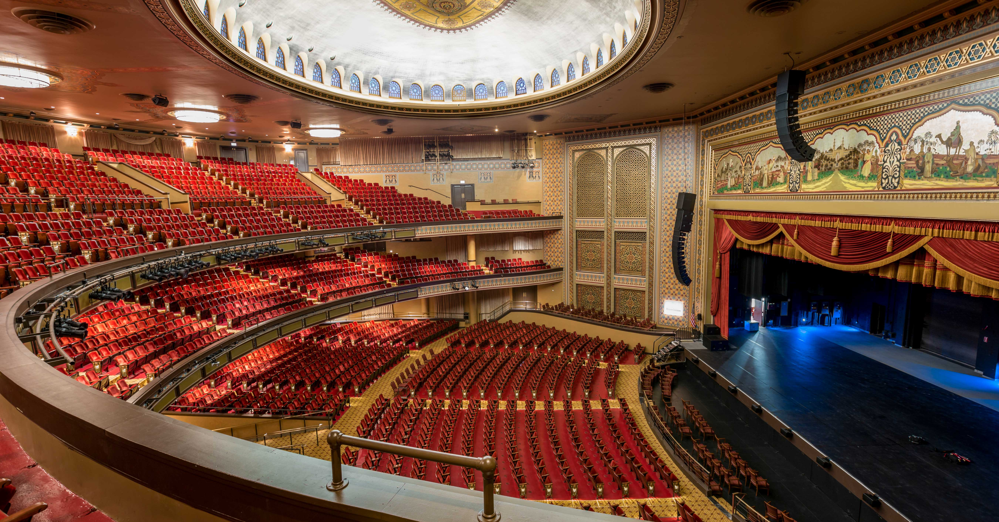

Founded in 1737, Richmond is a city brimming with history and culture. But like any great city Richmond is not without its flaws. Dispite it's blemished history, the present city strives to be inclusive in its celebration of its community.
No better example of this exists than the statue of Arther Ashe, located at the end of Monument Avenue-- The street where all the confederate soldier statues are located. When the statue was erected in the 1990's citizens debated weater or not the location of a Black icon should reside next to confederate civil war soldiers. In the end the city chose to confront the past, with the inclusion of the present.
Culture
